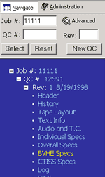
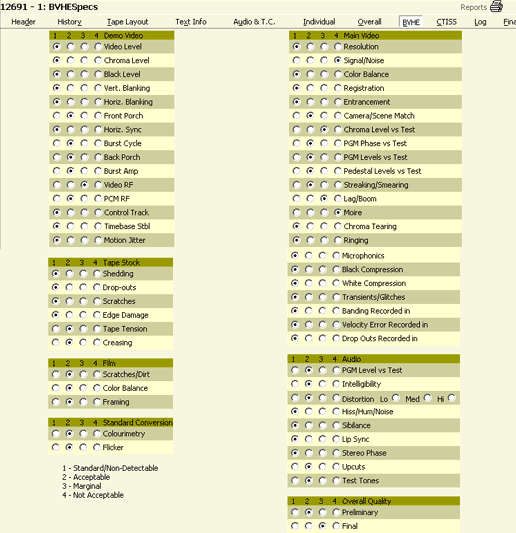

Alt+b then ENTER will take you to this page or clicking on BVHE in the menu bar on the right side. You can also click on the word BVHE SPECS in the Tree Frame (blue area) as in example 1A.
|
1A.
|
The BVHE Specs page displays fields for the information in the following example (1B) for Main Video, Demod Video, Tape Stock, Audio, Film, Standard Conversion and Overall Quality. There is a key with standards on the lower left side of this page. The choices are:
The choices are radio buttons where only 1 choice is allowed.
| 1B. |
DISTORTION is the exception with the ability to choose the type, hi, med or low.
After entering the information please click the SAVE button to save your data.